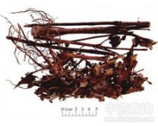

肿节风

拼音
Zhǒnɡ Jié Fēnɡ
别名
接骨金粟兰、九节茶、九节花、九节风、竹节茶、接骨莲
来源
本品为金粟兰科植物草珊瑚Sarcandra glabra （Thunb.）Nakai的干燥全株。夏、秋二季采收，除去杂质，晒干。
生境分布
生于山沟、溪谷林阴湿地，分布于华东、中南、西南。
药材特点
多年生常绿草本或亚灌木，高达2m。根茎粗大，支根多而细长。茎直立，多分支，节膨大。叶对生，近革质，长椭圆形或卵状披针形，长6～18cm，宽2～7cm，边缘有粗锯齿，齿尖具腺点；叶柄长约1cm，基部合生成鞘；托叶微小。穗状花序1～3个聚生茎顶；苞片卵状三角形；花小，无花被，黄绿色，芳香；雄蕊1，白色，棒状，花药2室；雌蕊球形，子房下位，柱头近头状。核果球形，鲜红色。花期6～7月，果期8～9月。
性状
本品长50～120cm。根茎较粗大，密生细根。茎圆柱形，多分枝,直径0.3～1.3cm；表面暗绿色至暗褐色，有明显细纵纹，散有纵向皮孔，节膨大；质脆，易折断，断面有髓或中空。叶对生，叶片卵状披针形至卵状椭圆形，长5～15cm，宽3～6cm；表面绿色、绿褐色至棕褐色或棕红色，光滑；边缘有粗锯齿，齿尖腺体黑褐色，叶柄长约1cm；近革质。穗状花序顶生，常分枝。气微香，味微辛。
性味
苦、辛、平。
功能主治
清热凉血，活血消斑，祛风通络。用于血热紫斑、紫癜，风湿痹痛，跌打损伤。
用法用量
9～30g。
化学成分
含挥发油、酯类、酚类、鞣质、黄酮、氰甙、香豆素、内酯。
药理作用
1：无药理作用数据
摘录
《中国药典》